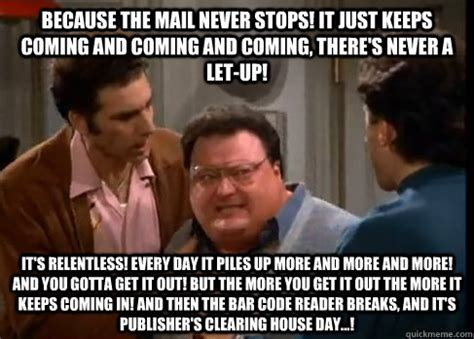
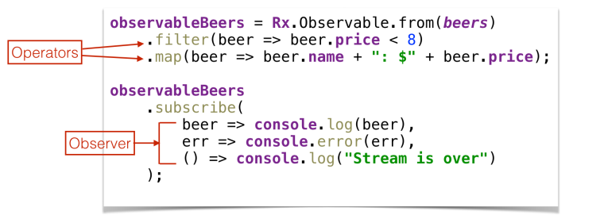

RxJS
- Shobhit Gupta
Async is hard
are built to solve problems around async
(to avoid "callback hell")
Promises
- are 'a promise' for a future single value
- Inherently not lazy. By the time you have promise, it's on its way to be resolved.
- Uncancellable. After creation, your promise will resolve or reject, and only once.
Observables
- are a Stream of data
- of any number of things
- over an amount of time.
- Lazy. Observables will not generate/process values unless they are subscribed to.
- Can be "unsubscribed" from. This means the underlying producer can be told to stop and even tear down.
Wise words from Muhammad's dog
Types of async in modern web applications
- DOM events
- Animations
- AJAX
- WebSockets / SSE
When does it makes sense to use Promises?
- DOM events (0-N values) ✕
- Animations (Cancellable) ✕
- WebSockets / SSE (0-N values) ✕
- AJAX (1 value) ✔
...except when it doesn't
- In SPAs, when the view changes, the next view probably doesn't care about the previous AJAX call that might be in-route
- We know that XHRs can be aborted
- But promise-based AJAX implementations cannot be aborted, because Promises aren't cancellable (well, not in a simple way).

...observables are not a competing standard.
From Promises to Observables
promise.then(
successFn,
errorFn
);
From Promises to Observables
observable.then(
successFn,
errorFn
);
From Promises to Observables
observable.subscribe(
successFn,
errorFn
);
From Promises to Observables
observable.subscribe(
nextFn,
errorFn
);
From Promises to Observables
observable.subscribe(
nextFn,
errorFn,
completeFn
);
But don't forget to unsubscribe
A subscription gets unsubscribed:
-
When you call the
.unsubscribe()function on the subscription object. -
When the Observable comes to a
completestate. -
or when it comes to an
errorstate. - Note: Observable can be forced to complete prematurely by other operators. And that is very useful.
RxJS Resources
Official RxJS docsLearn RxJS docs
Free Ebook by Chris Noring
RxJS Decision Tree RxJS Marbles
Animated playground for RxJS
Nice intro to RxJS by Andre Staltz
Observable Stream

What does operator and observer usages looks like?
Operators documentation
Creation operators in RxJS
Observable.of(valu1, value2, value3, ...)
Observable.from(promise/iterable/observable)
Observable.range(1, 10)
Observable.fromEvent(target, eventName);
Observable.interval(1000)
Observable.timer(0, 1000)
Observable.create((observer) => {...})
Observable.webSocket('ws://echo.websocket.com')
Observable.ajax.getJSON('https://api.exmaple.com')
Observable.ajax.get / put / post / patch / delete (url, [options])
...many more
Creation Operators
Some common Operators
map
filter
take
...operators like take (first, last, takeUntil, takeWhile, etc)
helps with auto-unsubscription.